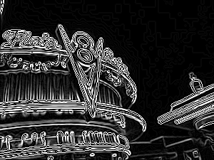
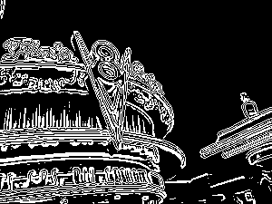

Edge Detection
Original
Concept:
Here is a step-by-step breakdown of the fundamental process used in edge detection algorithms. The gaussian filter is initially used to reduce noise so we are focused on the lower frequency content that remains. Next applied is the Sobel edge detection filter, an enhance filter to increase contrasts found by the Sobel filter. The last image is a threshold function that reduces the image to a binary representation of edges. Further processing, such as edge thinning, is not demonstrated here, but is the next step in making nice clean edges.
Credits:
Photo site: Flo’s V8 Cafe, Disney California Adventure, Anaheim, CA
OpenCV
Gaussian
Sobel

Enhance

Threshold